TEMA 02
Introducción al documento HTML
Material de estudio organizado a partir del PDF correspondiente. Se conserva el contenido textual del documento y se distribuye por páginas para facilitar su consulta.
Página 1
Introducción al documento HTML
Página 2
1. Introducción y contextualización práctica
3
2. El lenguaje de marcas HTML
4
2.1. Atributos y comentarios
5
2.2. Elementos HTML
6
3. Caso práctico 1: “Atributos de la etiqueta IMG”
7
4. Versiones de HTML
7
4.1. Navegadores y HTML
8
4.2. Diferencia entre HTML y XHTML
8
5. Caso práctico 2: “Validación de fichero XHTML”
9
6. Herramientas de diseño web
10
7. Resumen y resolución del caso práctico de la unidad
11
8. Webgrafía
12 cualquier medio o procedimiento, incluidos la reprografía y el tratamiento informático.
Página 3
1. Introducción y contextualización práctica
El lenguaje HTML es aquel que entienden los navegadores y el que viaja a través de la red. Con este lenguaje, se crean los documentos HTML que se almacenarán en el servidor web para que puedan ser accesibles en la red de redes (Internet). Es muy importante conocer las características y las posibilidades que ofrece este lenguaje de cara a realizar un proyecto acorde con las necesidades que se planteen en el diseño web. A continuación, vamos a plantear un caso práctico, en el cual los protagonistas son Alberto y Gloria. Su objetivo es que nos ayude a aproximarnos de forma práctica a la teoría de este tema. Alberto y Gloria son dos personajes que nos van a acompañar a lo largo del curso. Ellos trabajan en la empresa Web Málaga Design y en su web puedes ver a qué se dedican. Escucha el siguiente audio donde planteamos la contextualización práctica de este tema. Encontrarás su resolución en el apartado «Resumen y resolución del caso práctico de la unidad». Conocer el lenguaje HTML y sus características. Identificar los elementos que componen un documento HTML. Diferenciar entre etiquetas, atributos y elementos. Conocer las versiones de HTML y saber las diferencias con XHTML. documento HTML” https://bit.ly/2XaIPAG
Página 4
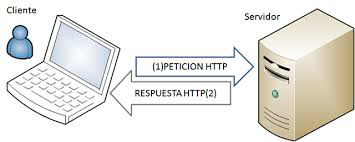
2. El lenguaje de marcas HTML
El lenguaje de marcas HTML (HyperText Markup Language) nos permite crear páginas web que se podrán visualizar en un navegador web como Chrome o Mozilla. Las páginas webs estarán alojadas en un servidor, y podremos acceder a ellas a través de una URL (Uniform Resource Locator). Esta URL es la que tenemos que indicar en el navegador para acceder al servidor y descargarnos una página web en nuestro navegador, que en este caso es el cliente, ya que este modelo responde a la filosofía cliente-servidor. Las etiquetas que podremos utilizar en el documento HTML deben escribirse entre los símbolos < y >, y siempre deben estar emparejadas (es decir, debe tener una etiqueta de apertura y otra de cierre). La etiqueta de cierre se indica con el carácter barra (/). Código 1. Sintaxis para delimitar un párrafo.
Cuando se trabaja con HTML, hay que tener en cuenta que:
• Existen algunas de estas que no requieren de etiqueta de cierre, como por ejemplo <hr>, que se utiliza para
mostrar una línea horizontal; o <img> para visualizar imágenes. En líneas generales, las etiquetas conseguirán modificar el aspecto visual del texto, aunque existen etiquetas que no marcan ningún estilo.
• No diferencia entre mayúsculas y minúsculas. Por lo tanto, da igual indicar <p> o <P>. Sin embargo, es una
buena práctica poner las etiquetas en minúsculas.
• Algunas etiquetas pueden anidarse, pero existen ciertas limitaciones en cuanto al tipo de etiquetas y al nivel
de anidamiento. Código 2. Mostrar en negrita una palabra dentro de un párrafo.
• Un salto de línea, los espacios en blanco y los tabuladores no aportan nada en la visualización final del
documento HTML, o sea, que el navegador los pasa por alto. Código 3. Códigos que muestran lo mismo en el navegador. <p>nombre de párrafo</p> <p>nombre de<b>párrafo</b></p> <p>Esto es un ejemplo</p> <p>Esto es un ejemplo</p>
Página 5
2.1. Atributos y comentarios
Las etiquetas de apertura pueden contener un atributo o varios, los cuales nos permitirán indicar alguna característica de dicha etiqueta. Existen atributos generales para todas las etiquetas y hay otros que son específicos para cada una.
Los atributos tendrán un valor que debemos indicar entre comillas. La sintaxis sería la siguiente:
Código 4. Ejemplo de uso de la etiqueta <img>. En este ejemplo, se utiliza la etiqueta <img> para indicar que queremos incluir una imagen con el atributo src, el cual hacer referencia al lugar donde se encuentra el fichero que contiene la imagen; con el atributo alt tendremos cierta información que se mostrará en el navegador cuando haya problemas a la hora de mostrar la imagen indicada. A continuación, mencionamos algunos atributos que se usan con frecuencia en HTML, aparte de los ya comentados, y en el siguiente enlace se puede acceder a una lista completa de atributos. La página web puede incluir comentarios que nos servirán para describir/documentar las partes que la componen. Esto es de suma utilidad cuando se trabaja con un grupo de personas o cuando retomamos el trabajo meses después. Los comentarios no se muestran en el navegador, se pueden incluir en cualquier parte del documento y deben estar incluidos entre los caracteres <! - - y - - >. Código 5. Ejemplo de comentario. Atributo Función disabled Permite deshabilitar un elemento de un formulario en HTML. href Se indica la dirección web para un enlace. id Se identifica de manera única un elemento del documento HTML. style Indica el estilo que se quiere aplicar a una etiqueta de HTML. title Se indica información extra sobre una etiqueta. Tabla 1. Atributos más frecuentes. <etiqueta atributo=”valor_de_atributo”> <img src=”andalucia_bandera.gif” alt=”Andalucia”> <! - - Esto es un ejemplo de comentario - - > <p>Apartado de atributos y comentarios</p>
Página 6
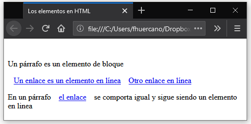
2.2. Elementos HTML
Además de etiquetas y atributos, en HTML nos encontramos con el concepto de elemento, que une etiquetas y contenido. Hay ocasiones en las que nos encontramos algunos textos en los que se habla de «etiqueta» y «elemento» como si fueran lo mismo, y no es así. Un elemento es más que una
etiqueta, porque está formado por:
• Etiqueta de apertura
• Cero, uno o más atributos
• Información encerrada entre las etiquetas
• Etiqueta de cierre
Este esquema representa un elemento de HTML, pues consta de una etiqueta de apertura (<p>), un atributo (class), el valor del atributo (“tipoclase”), contenido (“Este es el texto que quiero incluir”) y una etiqueta de cierre (</p>).
Los elementos HTML se pueden clasificar en dos grupos:
• En línea: solo ocupa el espacio necesario según su contenido. Por ejemplo, los enlaces son elementos en línea.
• De bloque: estos elementos siempre van a comenzar en una nueva línea y van a ocupar el espacio hasta el
final de la línea, aunque su contenido no necesite llegar hasta el final. Por ejemplo, un párrafo es un elemento de bloque. En el siguiente enlace podrás encontrar un listado completo de los elementos HTML en línea y en bloque. Video 1. “Elementos en línea y elementos en bloque” https://bit.ly/36FRGNT
Página 7
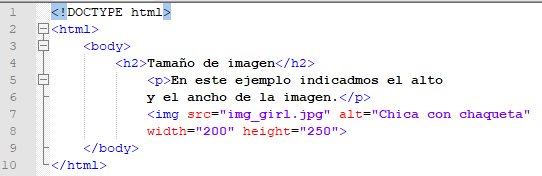
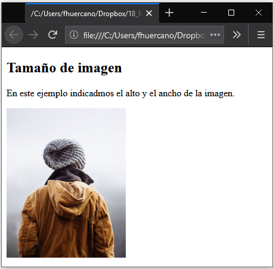
3. Caso práctico 1: “Atributos de la etiqueta IMG”
Planteamiento: Gloria comienza a realizar la página web encargada, pero no recuerda bien cómo se usaban los atributosni si la etiqueta img, además de los atributos indicados en los apuntes, dispone de algunos más. Nudo: Deberá investigar si la etiqueta img tiene más atributos y si son útiles para el desarrollo de la web. Gloria tiene que incluir varias imágenes en la página web y debe averiguar aspectos como tamaño, estilo, etc.
Desenlace: Tras consultar el contenido de la asignatura y buscar en Internet, Gloria encuentra esta información:
La etiqueta img dispone de los siguientes atributos:
• alt: indica un texto alternativo a la imagen.
• src: indica la URL donde se encuentra la imagen.
• height: indica la altura de la imagen en píxeles.
• width: indica el ancho de la imagen en píxeles.
• style: se indica el estilo que le quiero aplicar. Este es un atributo general que también se puede utilizar en
otras etiquetas. Los dos primeros atributos ya lo conocíamos, pero el resto son nuevos y nos van a permitir indicar el tamaño de la imagen en la web o el estilo que queremos aplicar. Con esta información, Gloria ya puede incluir su primera imagen en la web. El código que ha utilizado, así como el resultado, se muestran en las siguientes imágenes.
4. Versiones de HTML
A lo largo de la evolución de internet, HTML también ha evolucionado y se han creado distintas versiones que define el organismo internacional W3C (World Wide Web Consortium). Como comentamos en el tema anterior, la primera versión es de 1991 y la desarrolló Tim Berners-Lee, considerado como el padre de la web. A partir de esa fecha han
ido apareciendo las siguientes versiones:
Versión Características HTML 2.0 Se publicó en 1995 y se simplificó al máximo su estructura para agilizar su diseño. No soporta tablas. HTML 3.2 Se publicó en 1997 y fue la primera recomendada por la W3C. Ya incluía tablas, applets de Java, y diseños más avanzados. HTML 4.01 Se publicó en 1999 y aportaba novedades, tales como mejorar los formularios, poder añadir scripts, etc. HTML 5 Se publicó en 2014 y aporta nuevas etiquetas, la posibilidad de integrar audio y vídeo directamente sin plugins. Su característica principal es que aporta significado semántico. Tabla 2. Versiones de HTML.
Página 8
4.1. Navegadores y HTML
El navegador web es el programa que nos va a permitir visualizar la página web. Es el encargado de interpretar el código HTML que desarrollemos. Por lo tanto, es muy importante que no haya errores para que el navegador muestre nuestro documento HTML sin ningún problema. Existen numerosos navegadores en el mercado, tales como Chrome, Mozilla, Safari, etc. Estos programas han evolucionado mucho y todos aportan extensiones que facilitan el diseño de páginas web. Cuando estamos visualizando una página web podemos acceder a su código HTML pulsando el botón derecho y elegiendo la opción de «Ver código fuente de la página». Te animo a que lo hagas con cualquier página web de Internet. Obtendrás un código fuente como el que te muestro en el siguiente vídeo, donde puedes ver todas las etiquetas que se han utilizado para crear el contenido.
4.2. Diferencia entre HTML y XHTML
Como vimos en el primer tema, XHTML es una adaptación del lenguaje HTML al lenguaje de marcas XML. Por ello, en el esquema aparece como descendiente de HTML.
Las restricciones que tiene XHTML con respecto a HTML son las siguientes:
• Las etiquetas se tienen que cerrar en el mismo orden en el que se abrieron.
• Todos los nombres, tanto de las etiquetas como de los atributos, se deben de escribir en minúsculas.
• Los valores de los atributos que se indican en la etiqueta de apertura deben de ir entre comillas.
• No está permitido comprimir los atributos.
• Las etiquetas de apertura siempre deben tener su etiqueta de cierre.
Video 2.”Ver código fuente en el navegador” https://bit.ly/36Iuf6M Audio 1. “HTML y XHTML” https://bit.ly/3cl9YW5 Fig.7. Esquema del origen y evolución
Página 9
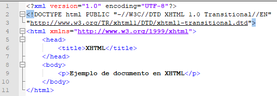
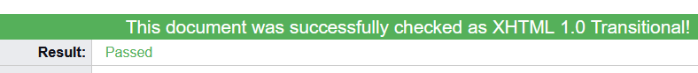
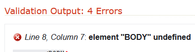
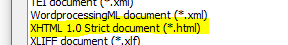
En la actualidad, existen dos versiones de XHTML, la 1.0 y la 1.1. La versión 1.0 se considera similar a HTML 4.0. Una de las diferencias principales de XHTML con respecto a HTML reside en su declaración en la cabecera. Una
declaración tipo sería la siguiente:
Podemos ver si un documento XHTML es válido accediendo al servicio online de W3C Markup Validation Service. Si
le pasamos el ejemplo mostrado en la figura 7, se obtiene el siguiente resultado:
Si se cambia body por BODY, se obtiene el siguiente error que no se tendría con HTML.
5. Caso práctico 2: “Validación de fichero XHTML”
Planteamiento: Alberto necesita buscar una herramienta que no esté online para poder saber si un documento XHTML es válido. Nudo: Investiga la herramienta que indique errores con respecto a las restricciones que debe cumplir un documento XHTML. Es importante que no esté en línea, pues se va a utilizar en un entorno donde no siempre hay acceso a Internet. Desenlace: Alberto se lo comenta a Gloria y ella le dice que ha usado XML Copy Editor, que permite saber si un documento está bien formado. Puede que este software también tenga una herramienta de validación. Gloria piensa que, al estar basado en XML, es muy probable que al pasarle el XHTML permita validarlo como si se tratara de un fichero XML. Se descargan la aplicación y, efectivamente, comprueban que hay una opción de validación. En las siguientes pantallas, mostramos el resultado con el mismo ejemplo utilizado anteriormente. A la hora de abrir el documento,
hay que indicar que se trata de un fichero XHTML 1.0, como se muestra en la siguiente imagen:
Página 10
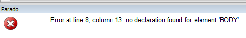
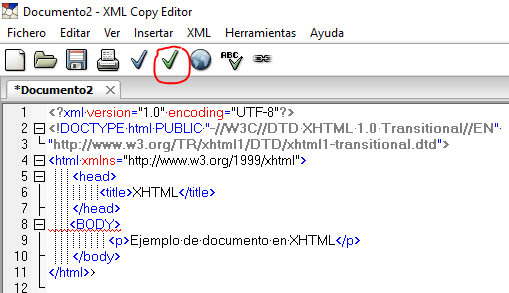
Para saber si el documento es válido, hay que pulsar en el botón «validar» que se encuentra en la parte superior del menú.
Al pulsar en ese botón obtenemos en la parte inferior el siguiente resultado:
Para solucionarlo, habría que poner body en minúscula y se solucionaría el problema.
6. Herramientas de diseño web
En este apartado, vamos a completar las herramientas de edición, comentadas en el primer tema, con herramientas
de diseño web y con otros recursos útiles para la creación de nuestras páginas web. Recursos para el diseño web:
• Colorzilla: extensión para Chrome que nos permite conocer el código exacto del color de un elemento de una
página web, para luego poder utilizarlo en la nuestra.
• Google Fonts: bases de tipografías gratuitas que podremos utilizar en nuestros diseños.
• WhatFont: te permite averiguar la fuente utilizada en una página web para poder utilizarla en nuestros
proyectos.
• MockFlow: permite crear un boceto de cómo quiero que quede mi diseño web.
• Pixabay: banco de imágenes de calidad.
• Iconfinder: la mayor fuente de iconos gratuitos.
• Gimp: programa de edición y retoque de imágenes, que nos ayudaran a adaptar las imágenes de nuestra web.
Como complemento a las herramientas de edición del primer tema, se añaden dos nuevas que te ayudarán en el diseño web. Video 3.”Recursos para el diseño web” https://bit.ly/3c9gSxf
Página 11
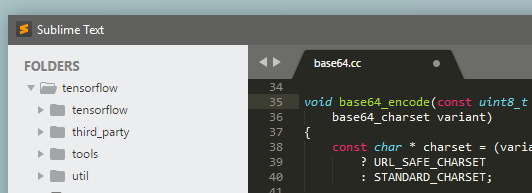
• Sublime Text es un editor de texto avanzado y multiplataforma. Permite trabajar con varios documentos a
la vez mediante pestañas. El resaltado de sintaxis soporta un gran número de lenguajes, entre ellos HTML y XML.
7. Resumen y resolución del caso práctico de la unidad
En este tema hemos visto las características principales del lenguaje HTML. Hemos hecho una primera aproximación a cómo se deben utilizar las etiquetas y los atributos en el documento HTML. También hemos hecho un recorrido por la evolución de HTML y hemos visto cómo el navegador web nos ayuda en la visualización del código fuente de una página web creada. Más adelante, veremos más herramientas de este tipo. Es importante conocer las diferencias entre HTML y XHTML de cara a elegir un documento u otro. Por último, se han completado las herramientas de edición del tema 1 con herramientas de diseño web. Resolución del caso práctico de la unidad
Alberto habla con Gloria y nos comentan:
«Gloria, HTML ha ido evolucionando con diferentes versiones a lo largo de los últimos 20 años. Resumiendo, te puedo decir que HTML, XHTML y HTML5 son lenguajes de marcado, y cada uno de ellos dispone de características comunes, pero también aspectos diferentes.
Página 12
Tanto XHTML como HTML5 se crearon como versiones que mejoraban HTML4. XHTML fue diseñado para incorporar algunas características de XML, útiles para el control de la validación del documento, mientras que con la aparición de HTML5 aparecieron nuevas etiquetas, lo cual dotó de significado semántico a su estructura. Por este motivo, es la versión más adecuada. Lo que tienes que tener claro es que los tres lenguajes son variaciones de HTML, pero incorporan diferentes reglas y características sintácticas. Te recomiendo que comiences por conocer las etiquetas básicas y el funcionamiento principal con HTML y, a medida que vayas entendiendo la filosofía del diseño web, continúes con el aprendizaje de HTML5 debido a su rápido crecimiento y funcionalidad mejorada.”
8. Webgrafía
Escuela de HTML: W3schools. Tecnología web para desarrolladores: Mdn. World Wide Web Consortium (W3C). W3C. Guía de referencia XHTML. Guía